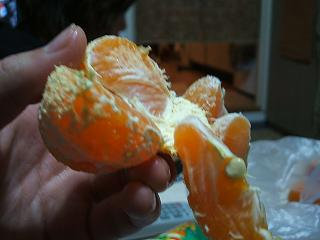

日々、想ふ
〜過去感じたことがつれづれと〜
（できるだけ最大化してお読みください）
日々、想ふ
ま〜わるま〜わる〜よせかい〜はまわる〜♪１２/１５
なんとか明日提出のレポートできました、
最後のほうはすっごい手抜き、タケユキです。
今日うちでこたつにこもってみかん食ってたら
友達がなんか特殊なみかんのむきかたで皮むいてた。
ふつうみかんてのは底の中心から皮をむいていきます。
で、その特殊な皮のむきかたはこう。
・その１
皮のてっぺんあたりだけを残してほかを全部むく。
・その２

みかんの実をひとつひとつ離して
ひっくり返していく。
・その３
 まるであかちゃんの上にあるあれみたい。
まるであかちゃんの上にあるあれみたい。
ということで今日の更新はおしまいです。
今日の狩り：やべえや、楽しいや。
今日の家計簿：
| 鍋 |
３５００円 |
| 雑費 |
１９８円 |
| 支出計 |
３６９８円 |
| 総支出 |
２００７７円 |
たぶんバイトとしては失格。１２/１４
今年のバイトはあと４回行ったら終わり、タケユキです。
レポート締め切りを直前に控えるも、
バイトがあったんで梅田へ。
ここ最近バイトで接客する時に
あまりお客さんにされて困る質問をされることはありませんでした。
「飲み放題は何時間？」とか
「この料理って量はどれくらい？」とか。
聞かれてもまあ答えられるような質問。
話はちょっとそれるけどうちのバイト先の料理の一つに
「気まぐれサラダ」なるものがあります。
そのときそのとき野菜を使ってる作る
シェフ気まぐれなサラダって意味なんだろうけど、
ぶっちゃけいつ見ても、どの気まぐれサラダを見ても
同じサラダにしか見えない。
どこが気まぐれか。
気まぐれサラダを名乗ってはいるがなんのことはない、普通のサラダ。
どんなものに関しても言えることだけど
特徴のないものの説明をするのは大変です。
シーフードサラダとかなら「どんなサラダ？」って
聞かれるまでもなく
海鮮系の食材が入ってるんだろうなというのは容易に想像がつきます。
つまり名が体を表しているものほど説明する必要はないんです。
問題なのは名が体を表しきれていないもの、
うちのバイト先でいう「気まぐれサラダ」。
今まで一度も聞かれたことなかったのに
今日だけで二回も質問された。
聞かれても困る、説明しようにも特徴ないんだもの。
「この気まぐれサラダってサラダ、どんなの？」
俺
「あ、普通のサラダです、はい」
お客さんも俺も、笑うしかなかった。
今日の下準備：明日は三丁目がいうところの狩り。
今日の家計簿：
| なし |
０円 |
| 支出計 |
０円 |
| 総支出 |
１６３７９円 |
誰もが一度は言う台詞。１２/１３
今日も書き始めはは学科内の話です。
最近学科内の俺の周り（決して
こんな文章を書く友達はいない・・はず）で
風邪が流行ってるみたい、
こっちの風邪が治ったら次はそっちかよ、みたいな感じで。
俺は先月長いこと鼻水が止まらなかったんだけど
今は特に体の異常を感じることなく過ごしてます。
今週来週と冬休み目前の今が一番忙しい時期、
風邪ひいてる人は早く治るといいですね、
たまには優しいことも言う男、タケユキです。
ここ最近「納豆健康法」を続けています。
できるだけ毎日納豆を食べようという運動です。
週に一度、１パック３食入りで１００円の納豆を２パック、
計６食分をまとめて購入、
これをできるだけ一日一食食べています。
納豆の賞味期限はだいたい一週間ぐらいなんで
週の始めに買った納豆も、週末に食べる時でも
賞味期限内においしく召し上がれるわけです。
ですがそれもあくまで計画で、
毎日食べることができないこともあるわけです。
そんな日のために一日予備日を作って
一週間で６食分消化していこうとしてるわけですが、
一人暮らしゆえ食べられない日、
バイト先でご飯と食べて帰ってくる日と、
ここ最近納豆健康法をうまく実行できていません。
今日は晩ご飯に納豆を食べることはできたんだけど
食べようと思った納豆のパックにはしっかりと、
「賞味期限 ２００４/１２/０９」
もともと腐ってるから大丈夫やって。
今日の現実逃避：AVP見たい。
今日の家計簿：
| 学食で昼ごはん |
４００円 |
| 支出計 |
４００円 |
| 総支出 |
１６３７９円 |
上には上が。１２/１２
俺は一人暮らしをしてるんだけど、
うちにはざるそば用のざるがあったりします。
ざるそばは夏の食べ物なので今は食べることはないですが
ざるをセイロに見立ててシューマイを蒸すのに使います。
これがけっこううまくいくもんで
今日だけでシューマイ２０個蒸しました。
でも蒸せるからって蒸せばいいってもんじゃないですよね、タケユキです。
昨日バイトが５連勤だって言ってたんだけど
今日バイト行ったら明日休んでいいよって話になった。
ちょっと得した気分になった。
レポートやテスト勉強にかける時間がなくて困ってたんだけど
これで明日一日予定で空いた。
ちょっとぐらいならドラクエやっても平気だろう。
でもまあ学校の課題はやっとこうと
ネットでミニレポートを提出するタイプの課題をやった。
この授業は他の人が提出したレポート内容や、
一言コメントみたいなものも見ることができるんだけど
今日なんとなくそのコメント集を見てたら
こんな文章を見つけた。
少し前に田代がタイ━━━━||Φ|(|゜|∀|゜|)|Φ||━━━━ホ!!されたのに続いて
今回島田進介も暴行とかで訴えられるとか芸能界も馬太目ぽ..._〆(゜▽゜*)ですね。
まぁ結構ネ申キタ━━━━━━(゜∀゜)━━━━━━!!!!って感じだったんですけど。
そいや最近ハ゜ソコンが( ＞Д＜；)オモーって感じで調べてみたら
(・∀・)ゥィルスー!!が発見されました( ・∀・)アヒャ
もう馬太目ぽです(∴◎∀◎∴) |
なんだこれは。
他の人は普通に「来週は忙しくなりそうです」とか、
「金がすぐなくなりそうです」とか
当たり障りのないことを書いてるんだけど
このコメントはいったいなんだ。
俺は一般的にキショいイメージが強い情報科に所属してます、
それ以外に多少はパソコンいじったりするわけですが、
こりゃ、やべえ。
ぜったい真似できん。
ってかこんな文章を授業のレポートに提出できる人間が
この世にいるのが信じられない。
というか同じクラスにいるのが信じられない。
というよりも、信じたくない。
今日は日曜日、つまり明日は月曜日。
こんなレポートを提出する人間と同じ授業を受けるのが、鬱。
今日の確認事項：これに比べて俺はまだまだ健全。
今日の家計簿：
| なし |
０円 |
| 支出計 |
０円 |
| 総支出 |
１５９７９円 |
働く気持ち。１２/１１
PSP、明日発売です。でも俺は買わないですよ。
むしろ先週発売の「太鼓の達人５」を買おうか迷ってるところです、タケユキです。
今日も学校の課題やばいんだけどバイトへ。
忙しいけどまあ結婚式の二次会のバイトなら、
人のお祝いのお手伝いをできるなら、
今一番大事にしたい時間を投げ出して働く気にもなりますよ、
結婚式の二次会ならね。
今日は結婚式の二次会の他にも普通の宴会の予約も入ってました。
うちのバイト先は基本的に土日は二次会しかやらないんですが
忘年会などの大口の宴会など貸切の宴会は受け付けてたりします。
まあ普通の忘年会だったりするんだろうなと思ってたら
幹事の人らしき人が大きな袋を持ってきてた。
宴会中にやるゲームの景品か何かだろうと思ってたら、
出てきたのは
「第８回セレブナイト」と書かれた横断幕。
おい、俺はそんな茶番な宴会を手伝う暇はない。
今日のバイト：やめたい病再発。
今日の家計簿：
| なし |
０円 |
| 支出計 |
０円 |
| 総支出 |
１５９７９円 |
紙一重でセーフだとは思うんだけど。１２/１０
俺は一枚の紙に一週間の予定がかけるスケジュール帳を使っています。

こんな感じのやつ。
つまり見開きで２週間の予定が見渡せます。
今日はその見開きの右側の金曜日。
週末の予定を見ると土、日とバイトになってました。
今日授業受けてたら
「前から言ってた通り、来週テストします」
って先生が言ってた。
今日は別にしんどくないけど塾のバイトあるのに・・、
来週は実験のレポートあるのに・・週末バイトだってのに・・。
この勉強が忙しい時期に３連勤はきついけど、
まあ土日バイトでも来週の放課後にでもレポートすませて
テスト勉強やればいいやって思って手帳を次のページをめくったら
来週の月曜火曜もバイトになってました。
３連勤＋２連勤は５連勤、俺に単位取らせないつもりですか、
それともドラクエさせないつもりですか、タケユキです。
今日は学校でPBLっていう授業をやっていました。
簡単に言ったら４，５人の班の中での議論をする授業です。
毎回議論のテーマは指定されるんですが
今回は「功利計算におけるガイドラインについて」です。
功利計算っていうのは、
商品に欠陥があったとして、その欠陥を直すのにかかる費用と、
その欠陥をそのままにしておいて、それによる損害補償等にかかる費用、
この二つの金額を算出し、企業にとって損失の少ない方を
選択するための利益計算のことです。
なんでもかんでも功利計算をして行動していたら
車の欠陥を直すのに金かかるなら
多少その欠陥による事故で人が死んでも賠償費用の方が安くすむから
欠陥なんてそのままにしてしまえー、みたいなことが起きるわけです。
つまり議題は功利計算を行うにあたって
守るべきガイドラインを議論により決定しろということ。
この議題の議長を俺がやることになってました。
学科内の人だけで班を組んでいるとはいえ、俺には初めて話す人ばかり。
心も打ち解けてないのに意見なんてぶつけられるかっての。
でもまあこういう学校でテーマが決まってる議論ってのは
たいていどこの班でも似たような結論に至るものです。
今回の議題に至っては
「倫理的、人道的であるべきこと」とか、
「企業に過失がある場合は功利計算を行うべきでない」とか。
まあうちの班もこんな感じになるんだろうなぁと思っていたら、違った。
「功利計算におけるガイドラインについて」うちの班の結論、
「子どもに自慢できるかどうか」
パッと聞いたら「自分ら、アホ？」って言いたくなるかもしれません。
子どもに自慢できない時は功利計算をするなってことですから。
でもね、よく考えてみ？
あなたに子どもがいるとして、
「お父さんなー、人が死んでもいいやって欠陥直さなかったから
給料あがったんだぞー」
夕飯の席で子どもにそう自慢できますか？
あなたに子どもがいるとして、
「お母さんね、期限切れの牛乳再利用したからボーナスでたの。
別に食中毒起きてもいいしね〜」
そう子どもに胸を張れますか？
会社も人間の集まり。
世間に公表すべきことを隠し、世のルールから外れたことを行い、
利益を得て家に帰り、それを自分の子どもに自慢できる親がいるものか。
利益第一の社会の中でも人間の良心に、僕は頼りたい。
この授業もレポート提出があるんだけど、
そうやってレポートまとめたらいい点取れたりすんのかなぁ。
正直ふざけてんじゃないのかって思われそうで怖い。
今日の不安：ちょっと日記長すぎ？ちゃんと最後まで読んでる？
今日の家計簿：
| 学食でカツカレー |
２９０円 |
| ニッショーで買い物 |
１０００円 |
| 支出計 |
１２９０円 |
| 総支出 |
１５９７９円 |
たぶん今年初めて。１２/９
タケ・・ユキ・・です。
そのくらい弱々しい感じに更新中。
今日友達とバーで飲んできた。
テキーラとかジンをショットで４杯くらい。
吐いた。
覚えてないけどとりあえず２桁くらいの回数は楽勝で吐いた。
一緒に飲んだ友達に家まで送ってもらった。
おぐ、ぐっち、たいすけほんと迷惑かけた、ありがとう。
ドラクエでいうHP２、もう死にかけで黄色になってる状態。
そんな状態でも更新してる俺、男。
そんなありえん状態なので今日夜メールくれた人、
返事返せていません、明日返します、必ず。
明日一限、行けるかなぁ。
今日の・・：・・・・・。
今日の家計簿：
| バー |
３０００円 |
| お昼ごはん |
３９０円 |
| 支出計 |
３３９０円 |
| 総支出 |
１４６８９円 |
もっと別のとこで競え。１２/８
連絡取ってない間にも遠くの友達にもいろんなことが起きてるもんなんだなぁ、
久しぶりに
３丁目や
綾乃さんと電話で話して思ったことはそんなことです。
まあ相変わらず綾乃さんの俺に対する言葉は説教みたいなものばかりでしたが。
まあ説教されるような生活送ってるわけだから文句言えません、
とりあえずご機嫌だけは取っとこうと帰省の度に
その時その時の季節限定生八橋をお土産に買って帰ってるのは
そういう作戦だったりします、タケユキです。
なんか聞いた話によるとドラクエの進み具合が
３丁目に負けてるらしい。
それはならん、まかり通ってなるものか。
というわけで学校から帰ってとりあえずドラクエ。
勉強やばいけど、負けるわけにはいかん。
単位落としたとしても、負けるわけにはいかん。
睡眠不足で明日遅刻したとしても、負けるわけにはいかん。
うん、そんな恐怖感背負ってゲームやっても楽しくない。
今日のドラクエ：結局３時間でやめた。
今日の家計簿：
| 関西ウォーカー |
３２５円 |
| ニッショーで買い物 |
９１５円 |
| 支出計 |
１２４０円 |
| 総支出 |
１１２９９円 |
悩み多き年頃。１２/７
悩み中悩み中、タケユキです。
サークルの友達がバイク買いました。
そのテンションにまかせて許可証もないのにキャンパス内に入ってきてた。
許可証の代わりにクレジットカードを見せたら中に入れたらしい。
なんやのこのセキュリティの甘さは。
俺は今日梅田でバイトがあったんで
サークルのバイク持ってる友達にツーリングついでに
梅田まで乗せてもらいました。
いやぁ、バイクいい。超欲しい。
けど去年自転車で車にはねられてるんで
親が「ぜったい許さん、何考えとんねんボケー」
みたいな姿勢をとりつづけているので、悩み中悩み中。
まあ学校が忙しかったりするので免許はまだもうちょっと先の話になりそう。
ここ数日勉強やバイトだったりと
先月末に買ったドラクエが全然進んでない。
でも昨日今日とドラクエがまったくできてないのに
いたって普通な自分がいる。
昔多少ゲーマーだったはずなのに、
昔はゲームの発売日には学校の行きにコンビニでゲーム買って
学校で説明書読んでたはずなのに、
これはいい傾向なのかどうなのか、悩み中悩み中。
明日も勉強とかでドラクエできなさそう。
今週来週は勉強とかの用事がけっこうたてこんでたりします。
なんとかがんばろう。
まあそんなことより、今日のオチで、悩み中悩み中。
今日の日記；結局オチはありません、それがオチということでここはどうかひとつ。
今日の家計簿：
| プリクラ |
２００円 |
| 支出計 |
２００円 |
| 総支出 |
１００５９円 |
職業病？１２/６
地下駅の改札の近くには小さな売店がいろいろあります、
JRでいうキヨスクみたいなやつのことです。
バイト先に行く途中にも地下街を通るんで
その時谷町線や御堂筋線の改札の近くを通ります。
その地下鉄の改札の近くに地下鉄の駅（SUB STATION）をもじった売店、
「
SUBSTA」があります。
分かってるんだけど、
「サブスタ」って読むんだってのはもう知ってるんだけど、
最初にその売店を見て以来、
見るたび頭に浮かぶ言葉は
ずっと
スブタ（SUBUTA）なんです、タケユキです。
昨日も今日も梅田行ったんだけど街はクリスマス一色。
イルミネーションがすっごいきれい。
きれいすぎて
今週の一枚を今日早めに更新するくらいきれい。
でも学校でちょっとLED(発光ダイオード)に関係した実験やってるせいで
イルミネーションを見た感想が
「このイルミネーション実現するの大変そうだなぁ」
「点滅の周期はコンデンサが1000μFの時のと同じくらいかな」
「このちっちゃいやつはフリップフロップ３つで実現できそう」
ロマンもなにも、あるものか。
今日のお昼：おごってもらった。
今日の家計簿：
| なし |
０円 |
| 支出計 |
０円 |
| 総支出 |
９８５９円 |
紅葉の秋。１２/５
今日は紅葉を見に行きました、タケユキです。
今週末は天気が微妙だったんで行けるかどうか不安だったんだけど
いざ昼起きてみると普通に晴れてたんで
箕面の滝の紅葉を見に行ってきました。
前日の雨や風で葉が散ってないか心配だったんだけど
まだけっこう残ってた。
もちろん滝もきれいで。
前日の雨の影響でけっこう水量が増してて、
そんなに近づいたりしなくても水しぶきがすごかった。
けどそのおかげで虹が見れたのはかなりの幸運。
１２月入ったけど紅葉はまだまだ見ごろ。
と紅葉の紹介したところで明日テストがあるので今日はこのくらいで。
今日のバー：アドヴォカートはミルクで割って。
今日の家計簿：
| 電車賃 |
３００円 |
| バー |
１５００円 |
| その他いろいろ |
２１１０円 |
| 支出計 |
３９１０円 |
| 総支出 |
９８５９円 |
風呂に長く入ってた時みたい。１２/４
サークルの友達が最近ホームページ作って日記つけ始めました。
俺と同じ名前を持つ男、
それはうちのサークルのゴールキーパー、
だけど呼び名はこっちは名前、あっちは苗字からきてるもんで
ホームページ見に行って、
「おい話ちゃうやんけー、名前ちゃうやんけー」
みたいな苦情は勘弁してください、
先月くらいからバー通いにハマっている男、オグのHP「
大野戦軍」が
今日からリンクに新登場、タケユキです。
バイトがある休日の例にもれることもなく
今日は昼に起きてうだうだして、夕方から電車に揺られバイトへ。
いつものように働いてたんだけど、
今日は大きい二つの宴会の時間が被ってたらしく
調理場の方がかなりの戦場に。
調理場の人ってのはバイトの人じゃなくて
いつも決まった人が二人で料理作ってます。
忙しい時はたまに洗い場を手伝ったりすることがあるくらいなんだけど
今日の忙しさはありえんかったらしく、
なぜか調理場の人が作った揚げ物を俺が皿に盛ったり、
見ててある程度やり方は知ってたけど
実際に蒸し物を俺が蒸し器にセットしたりした。
ってかこれって食品衛生法とかにひっかかったりせんのかなぁ。
飲食系のバイトしてる人は知ってると思うけど
営業中の調理場の中ってのはほんとに熱い、暑いじゃなくて熱い。
サウナに入ってるんじゃなかろうかと間違うほど。
しかもその熱のもとになってる鍋からできた料理ももちろん熱い。
揚げ物って冷静に考えたら油の中からでてきたやつだし。
・・冷静に考えなくても揚げ物って油の中からでてくるか。
まあそんなことはどうでもよくて
問題なのはその揚げ物を盛り付けてって言われた時のこと、
俺「これ（揚げ物）って箸かなにかで盛ったらいいんですか？」
調理場の人「何言うてんのそんなことしてたら
６０人分盛るのにどんだけ時間かかんねん。
素手でやるんやって。ってか素手ってか根性でやる」
こんなところで精神論を持ち出されるとは思いもせんかった。
今まで洗浄器からあがった食器（これも十分熱い）片付けたりしてたから
多少の熱いってのは我慢できたはずなんだけど、
無理。揚げたてのエビフライを素手は無理。
なんの罰ゲームかっての。
本気で泣きそうになりながら料理盛って皿洗浄器にかけて、
ピークが一段落ついたくらいにホールに戻った時には、
指先がちょっとふやけてた。
今日のバイト：全然楽しくない。
今日の家計簿：
| なし |
０円 |
| 支出計 |
０円 |
| 総支出 |
６５４９円 |
どちらかと言えばパワーアップ？１２/３
週末は天気が崩れるらしいですね、タケユキです。
お昼天気予報を見てたらフィリピンのあたりに台風が来てるって言って
た。
１２月に台風とかありえねえべ？
そんな感じで友達に「なあ今台風来てるらしいな」って言ったら、
「え？もうただの低気圧に変わったよ？」
なんか俺がバイトしてる間に台風からただの低気圧に戻ってたみたい。
ちょっと知ったげに話した俺がなんかせつない。
てなことがあって今日ちょっと台風とかそういうものについて調べてみた。
台風 (Typhoon)っていうのは北西太平洋に位置する熱帯低気圧のことを指します。
それから北部大西洋・北東太平洋の熱帯低気圧のことをハリケーンといいます。
同じものでも場所によって名称が異なるんですね。
僕の呼び名が人によって「タケコレ」だったり
「たけぞう」だったりするのと同じ理屈です。
おかんからの呼ばれ方は「たけっちゃん」でした。
ってこんなところでわけの分からない過去を暴露してどうする俺。
話を台風の話に戻します。
ちなみに熱帯低気圧のことを英語でトロピカルサイクロン、
普通の低気圧のことを一般にサイクロンというそうです。
ですから最初の会話をインターナショナルにしてみると
「なあ今日タイフーン来てるらしいな」
「え？もうただのサイクロンに変わったよ？」
サイクロンの方がなんか強そうだと思うのは僕だけだろうか。
今日の
今週の一枚：変更しました。
今日の家計簿：
| おでん |
４００円 |
| 酒のつまみ |
２００円 |
| 支出計 |
６００円 |
| 総支出 |
６５４９円 |
深く考えすぎるとこうなる。１２/２
毎週辛い目を見てきた実験の授業、
少し光が挿してきたかもしれません、
でも今度は来週とある科目の中間テストがあってみたり。
学校ってこんなに大変だったっけ？
学校の陰謀としか思えません、タケユキです。
とまあ学校の勉強が大変だったりするんだけど
夜はサークルの友達が鍋やりたいって言ってたらからうちで鍋をやることに。
でもその友達は夕方からはバイトだったんで買い出し行こうって時に連絡取れず。
友達の陰謀としか思えません。
こういう時いつもは「なんやのー！ふぬー！」とかなるところですが、
別の友達が買い出し行くのにバイクで迎えに来てくれたんで
「なんやのー！ふぬー！」から「うひょー！冬のバイクさみぃー！」に変わってみたり。
冬のバイクマジ寒い、けどやっぱりバイク欲しい。
春休みまでに免許取りたいなぁとか思ったりするんだけど
最初に書いたみたいに学校が忙しくなかなか踏ん切りがつきません。
学校の陰謀としか思えません。
う〜ん、陰謀となにかを掛けてオチ作ろうと思ったんだけど
うまいことつながりが見つけられませんでした。
とりあえずそんな時はうま
いんぼうでも食べながら
すっきりしたオチ考えよう。
ごめん今日の日記、失敗。
今日の決心：貝のように口を閉ざせ。
今日の家計簿：
| お昼に学食 |
４２０円 |
| 鍋の買い物 |
７２６円 |
| 支出計 |
１１４６円 |
| 総支出 |
５９４９円 |
今もレベル３１（あがってません）。１２/１
タケユキです。
今日一限遅刻せずに授業出ました。
二限目、時間外実験しようと実験の教室行ったら
担当教官が出張でいないから部屋が開いてないとかいう事態で
実験を進めることができず、意気消沈。
タケユキです。
お昼ご飯食べにいったん家に帰りました。
こたつに入って横になっていいとも見てました。
テレフォンショッキングのゲストがYUKIだったことまで覚えてました。
気がついたら寝てました。
３限始まって３０分経ってました。
もういまさら授業出る気にはなれず。
欠席してても当てられたりしなかったら
欠席はばれないっていう授業だったんで、
先週当たってたし今日は当たらんだろうと
そう思って資料だけもらってきてと友達にメールを送信。
またこたつのなかでうとうとしてたんです。
少ししてからメールの返事が返ってきました。
「今さっき自分当たったで」
タケユキです。
こんな感じで今日の学校は終了。
いつもならここからドラクエに集中するところですが
今日はバイトがあってそうはいきません。
ちょっと早めに出て梅田で買い物したり用事すませてバイトへ。
タケユキです。
７時過ぎくらいにバイトの子（女の子）が店に入ってきました。
先月の給料でももらいにきたんかな（うちは給料手渡し）って思ってたら
彼氏つれてきてました、ご飯食べに来てたみたいです。
うわ、なんかからみづらいそうって思ってたら
案の定一緒に入ってるバイトの先輩が、
「タケユキ、オーダーとってきて」
タケユキです。
なんで俺がこんなので緊張せんといかんのかと
多少不満に思いながらもオーダー聞きにいきました。
うちの店はホールの人はインカム（トランシーバー？）つけてて
ホールの人同士はそれでお客さんに知られずに話ができます。
でもまあ今日はそんな忙しくないし
インカムとりあえずつけてるだけで使わんだろうと思ってたんだけど
オーダー聞いてる時に右耳につけたインカムから先輩の声が、
「タケユキ、ギャグやれ！おもろいやつ！はやく！」
タケユキです。
わざわざバイト先に彼氏連れてこんでもさぁ・・。
「今あの二人一分くらい沈黙やったで！」とか
「なんやあの『よそ行き』みたいな顔は」みたいな
ホールの人全員がやじ馬的人間だってお店でリラックスできないっしょ？
タケユキです。
最近ずっとこっちの接客のバイトつまらん、楽しくない、
もうやめたいみたいなこと言ってたけど
今日は久しぶりに楽しかった。違う意味で楽しかったんだろうけど。
タケユキです。
たまには日記を書く形式を変えてみるのもありだと思います。
そんなわけで今日はお笑い芸人ヒロシ調につづってみました、タケユキでした。
おまえら、「ちょっと古い」とかって思うな。
今日のタケユキです。：８回言った。
今日の家計簿：
| 定期 |
３０７０円 |
| 無印でファイルとか |
６５１円 |
| ニッショーで買い物 |
１０８２円 |
| 支出計 |
４８０３円 |
| 総支出 |
４８０３円 |